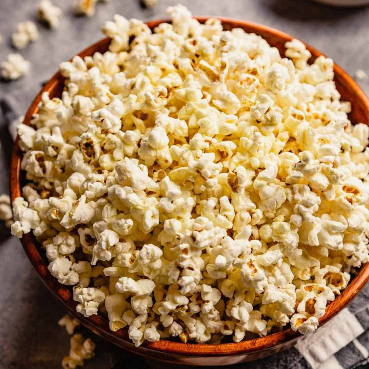

Store bought popcorn has become a home staple for most households; but nothing beats homemade popcorn that goes straight to the heart.
Ingredients
- Extra Virgin Olive Oil (45 mL)
- Popcorn Kernels (80 mL)
- Unsalted Butter (15 mL)
- Salt to Taste
Steps
- Heat the Oil: Heat the extra virgin olive oil in a 1 L thick-bottomed saucepan turned to medium-high heat.
- Put 3 or 4 kernels in the oil to see when they pop.
- Once they pop, add the rest of the kernels to have an even layer covering the saucepan.
- Cover the pot, remove from heat and count approximately 30 seconds.
- Return saucepan to medium-high heat. Shimmy the pan to shake the kernels, gently shaking them.
- Once the amount of kernels popping slows to a few seconds between popping, remove saucepan from heat.
- Dump popped corn into a wide bowl.
- Reuse saucepan and melt butter in the empty hot pan.
- Pour the melted butter evenly over all the popped kernels in the wide bowl.
- Sprinkle salt over popcorn to taste.
- Serve!
Return to Top
Back to Main Page